Comment chaque outil marche, et sur quelles données · 11 novembre 2026
Un outil par double page : comment ça marche en langage simple, une ou deux captures de l'outil en action sur un cas réel, le tableau « chaque chiffre affiché, d'où il vient », les limites et les doutes. Les détails techniques (fichiers, requêtes, numéros de ligne) restent dans les fiches d'audit ; ce livret s'en tient à ce que voit l'utilisateur. À la fin : les incohérences entre outils.
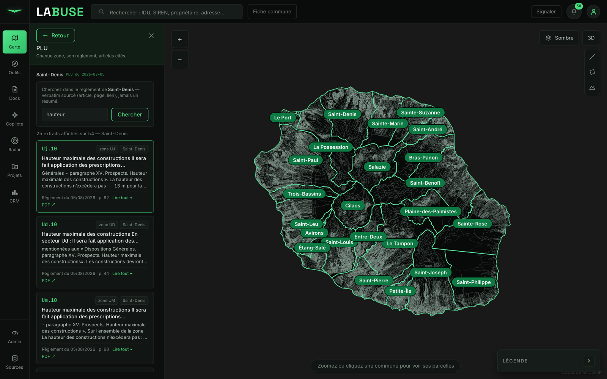
| Libellé à l'écran | D'où il vient | Sourcé / Estimé |
|---|---|---|
| « N PLU en vigueur (24 communes, N au RNU) » | comptés sur statut réel | sourcé |
| Badge « révision » sur une carte | lu dans (Sudocuh) si procédure active | sourcé |
| Badge « RNU » / « non servi » | statut calculé | sourcé |
| « PLU du jj/mm/aaaa » (en-tête commune) | des extraits en base | sourcé |
| « N extraits affichés sur M » | n | sourcé |
| Numéro d'article (vert) | extrait du PDF à l'ingestion | sourcé |
| Zone (puce) | zone déduite de l'en-tête article/zone à l'ingestion | sourcé, mais heuristique (voir §6) |
| Titre « en clair » | sur le verbatim | estimé (reformatage heuristique du verbatim) |
| Corps / aperçu / « Lire tout » | brut du PDF | sourcé (verbatim) |
| « Règlement du … · p. N » | millesime + (PAGE PDF, pas page imprimée) de l'extrait | sourcé |
| « doute — vérifier au PDF » | drapeau doute posé à < 25 car. non-blancs | estimé (heuristique) |
| « ⚠ pagination … » | — | estimé (heuristique) |
| Pack « version du jj/mm/aaaa » | suffixe AAAAMMJJ de l'originalName GPU | sourcé (live GPU) |
| Exception « zone N — … » | lu dans | sourcé (config calibrée) |
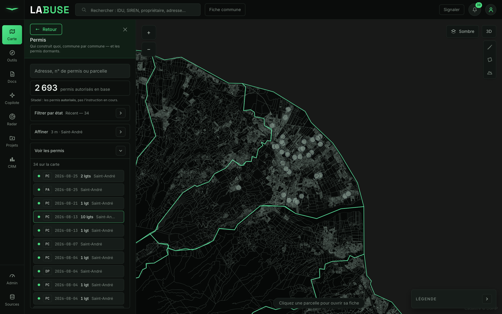
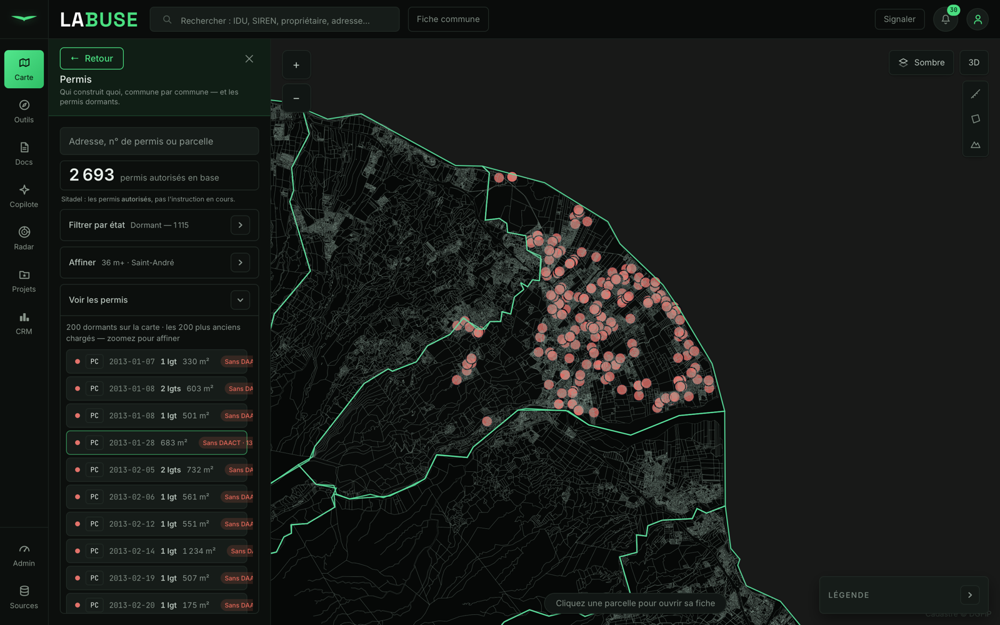
| Libellé à l'écran | D'où il vient | Sourcé / estimé |
|---|---|---|
| « Récent » N | → total (COUNT sur) | sourcé |
| « Dormant » N | → (COUNT distinct, run moteur) | sourcé (dépend du run LABUSE) |
| « Achevés » N | — | sourcé |
| « Autres » N | dérivé Tous − Récent − Dormant − Achevés (ModulePanel l. 656) | estimé (soustraction, jamais compté directement) |
| « Tous » N | → total | sourcé |
| « Données jusqu'au » | de | sourcé |
| % géocodés | — | sourcé (dérivé) |
| « N permis à moins de 200 m » | → c200 / localises | sourcé |
| Distance d'un permis | parcelle↔permis | sourcé |
| Statut (fiche) | DAACT⇒achevé sinon code etat décodé | sourcé |
| Nature / Destination (fiche) | / sur type / | sourcé (décodé via dict codé en dur) |
| Délai d'instruction | si valide | sourcé (dérivé) |
| Porteur / SIREN | /; sinon « personne physique anonymisée » | sourcé |
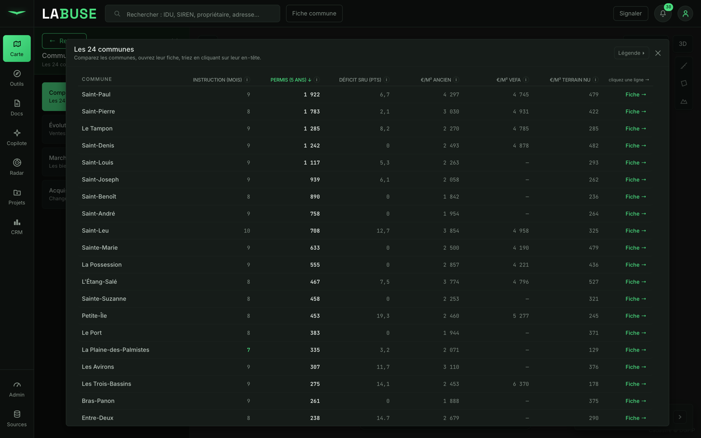
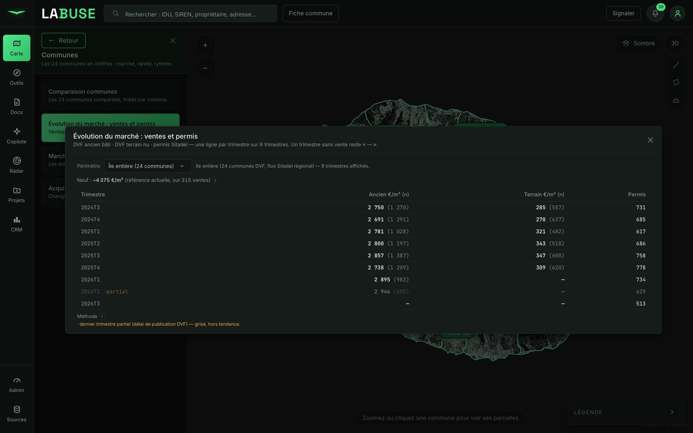
| Libellé à l'écran | D'où il vient | Sourcé / Estimé |
|---|---|---|
| Comparateur — Instruction (mois) | médiane (SITADEL) | Sourcé |
| Permis (5 ans) | count 5 ans glissants | Sourcé |
| Déficit SRU (pts) | objectif−taux | Sourcé (DHUP) |
| €/m² ancien | médiane DVF ventes strictes commune entière (, n≥100) | Sourcé |
| €/m² VEFA | médiane DVF VEFA live (, n≥8 sinon « — ») | Sourcé |
| €/m² terrain nu | médiane DVF terrain nu par zone U/AU (n≥10 sinon « — ») | Sourcé |
| Score composite / rang | moyenne pondérée min-max des axes | Estimé (commodité non calibrée) |
| Évolution — Ancien/Terrain €/m², Permis (n) par trimestre | DVF + SITADEL trimestriels | Sourcé |
| Tendance /an (perimetre, interne) | glissement annuel médianes | Sourcé (dérivé) |
| Neuf: ~N €/m² | référence VEFA live | Sourcé (sinon « — ») |
| Marché — écart demandé/acté% | (Radar demandé − DVF acté) / acté, si ≥5 biens | Sourcé (dérivé de 2 sources) |
| Marché — loyer €/m² | carte des loyers DHUP | Sourcé |
| ZAN — conso 2011-21 / 2021-24 (ha), part habitat% | (Cerema) | Sourcé |
| ZAN — budget / reste / horizon /% consommé / trajectoire | dérivés règle −50% | Estimé |
| ZAN — OCS GE part artif% | (IGN) | Sourcé |
| Rareté — stock opportunités (ha) | run servi | Sourcé |
| Acquisitions — N changements, acquéreur avant→après | millésimes DGFiP PM | Sourcé (constat, pas une vente) |
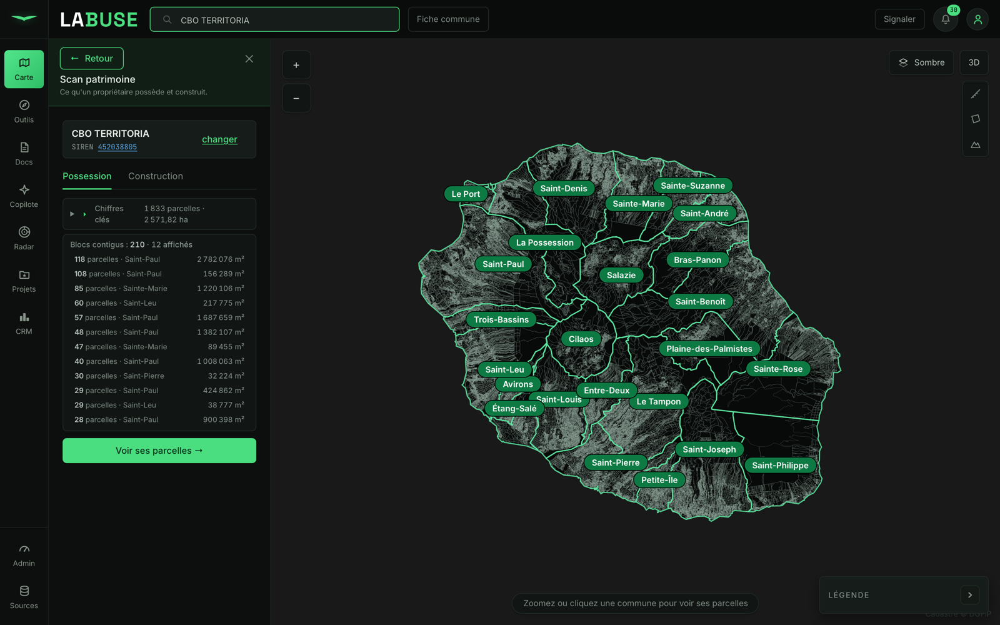
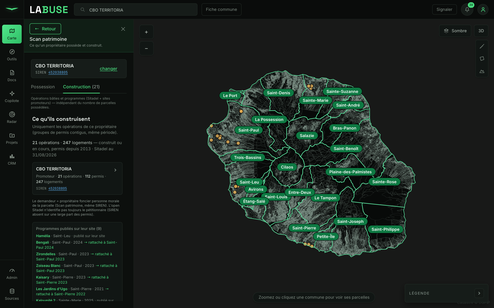
| Libellé à l'écran | D'où il vient | Sourcé / estimé |
|---|---|---|
| « N parcelles » | de | sourcé |
| « surface totale » (m²) | Σ contenances cadastrales | sourcé |
| « terrains nus / bâtis » | emprise bâtie | sourcé |
| « en zone U ou AU » | — | sourcé |
| « N actionnables » | compte sur (scoring) | sourcé (dérivé du scoring LABUSE) |
| « valorisation nu » (€) | surface × médiane €/m² DVF zone | estimé |
| « Fichiers fonciers DGFiP · situation 2025 » | — | sourcé |
| « Dépôt de comptes — dernier exercice AAAA » / « aucun dépôt depuis N ans » | — | sourcé (le « sommeil probable » interprétation du seuil 3) |
| « ● BODACC — procédure » | — | sourcé |
| « Aucun dirigeant au registre INPI » | absence dans | sourcé (le « succession / sommeil » interprétation) |
| « Blocs contigus: N » | — | sourcé |
| par parcelle: commune · surface · SDP · « occupé par N établissements » | parcels | sourcé |
| Libellé à l'écran | D'où il vient | Sourcé / estimé |
| — | — | — |
| « N opérations » | nb de groupes union-find | sourcé (mais regroupement heuristique) |
| « M logements » | Σ SITADEL | sourcé |
| « permis depuis AAAA » | plus ancienne des opérations servies | sourcé |
| « Sitadel au JJ/MM/AAAA » | — | sourcé |
| par opération: commune · N lgt · N permis · date · état | SITADEL agrégé | sourcé; état décodé |
| frise: N op / N lgt par année | agrégat des opérations | sourcé |
| « En pétitionnaire: N permis · M logements » | (2013+) | sourcé |
| « +N permis via K filiales identifiées » | × SITADEL | sourcé (lien de gérance INPI) |
| « Patrimoine foncier détenu: N parcelles » | (SANS parcels) | sourcé — mais compte ≠ onglet Possession (voir Doutes) |
| « annonce neuve Radar rattachée » | — | sourcé |
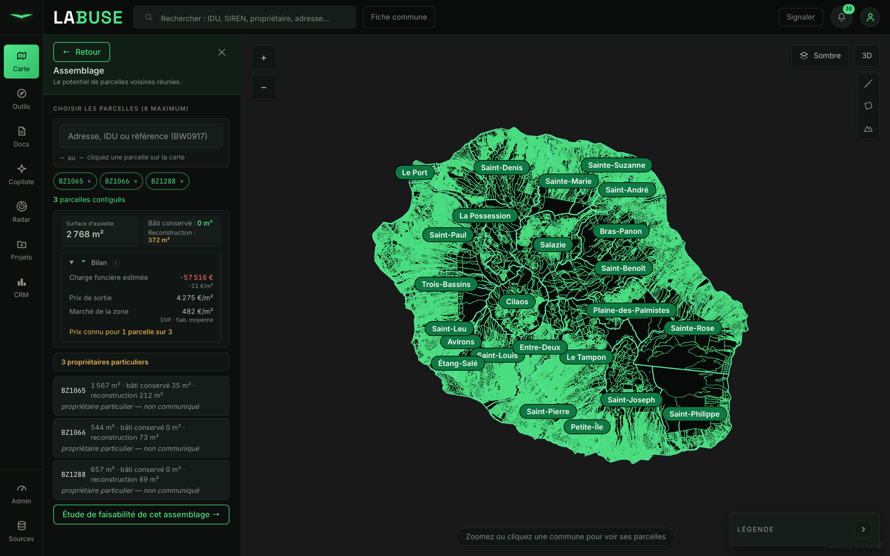
| Libellé à l'écran | D'où il vient | Sourcé ou estimé |
|---|---|---|
| « N parcelles contiguës » | n + contigu (graphe adjacence) | sourcé (géométrie cadastre) |
| « Surface d'assiette … m² » | Σ contenances cadastrales | sourcé |
| « dont … m² en zone constructible · X% hors zone » | (clip U/AU) | sourcé (zonage) × géométrie |
| « Bâti conservé: … m² » | brute − bâti existant | estimé (moteur capacité + hypothèse bâti) |
| « Reconstruction: … m² » | (capacité brute, table rase) | estimé |
| « * SDP bâti conservé estimée » | (hypothèse de niveaux) | estimé (signalé) |
| « Charge foncière estimée » + « … €/m² » | / | estimé (bilan à rebours) |
| « Prix de sortie … €/m² » | — | estimé |
| « Marché de la zone … €/m² · DVF · fiab. X » | (médiane DVF) | sourcé (DVF) mais médiane → semi-estimé |
| « Prix connu pour N parcelle sur M » | vs n | sourcé (comptage) |
| « ✓ Approche simplifiée — N personnes morales » / « N particuliers » | — | sourcé (DGFiP PM); particuliers absence de PM |
| ligne parcelle « surface · bâti conservé · reconstruction » | — | surface sourcée; SDP estimées |
| « N parcelles sans droits à bâtir estimés » | items dont | estimé |
| « Assiette sans capacité » | — | estimé |
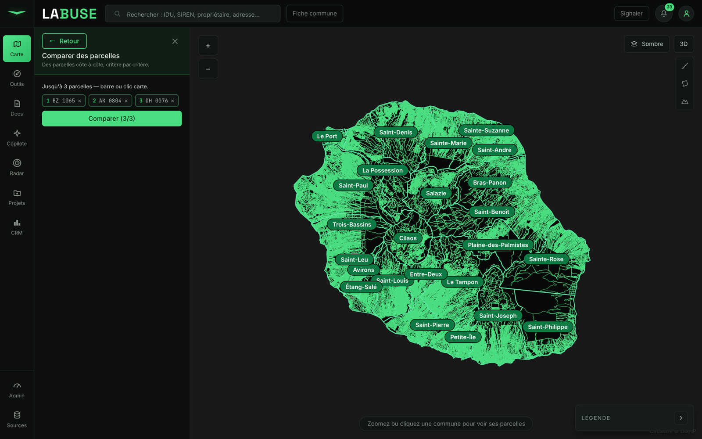
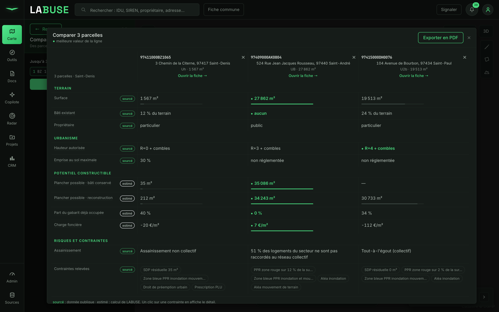
| Libellé à l'écran | D'où il vient | Sourcé / Estimé |
|---|---|---|
| Surface | parcels (surface terrain servie) | sourcé |
| Bâti existant | emprise bâtie CoSIA/BD TOPO ÷ surface terrain | sourcé (calcul de ratio sur donnée mesurée) |
| Propriétaire | (DGFiP); défaut « particulier » | sourcé |
| Hauteur autorisée | (règlement PLU) | sourcé |
| Emprise au sol maximale | via; sinon « non réglementée » | sourcé |
| Plancher possible · bâti conservé | faisabilité | estimé |
| Plancher possible · reconstruction | faisabilité | estimé |
| Part du gabarit déjà occupée | faisabilité | estimé |
| Charge foncière | faisabilité | estimé |
| Assainissement | bloc anc de la fiche (souvent constat de secteur) | sourcé (mais parfois statistique de secteur, cf. §6) |
| Contraintes relevées | lignes cascade HARD_EXCLUDE/SOFT_FLAG (PPR, PLU, DPU…) | sourcé |
| (non affiché dans ROWS) prix bâti/terrain secteur | DVF / | sourcé (recopié / recalculé) |
| (non affiché dans ROWS) bande LABUSE + Signal | — | estimé (score LABUSE) |
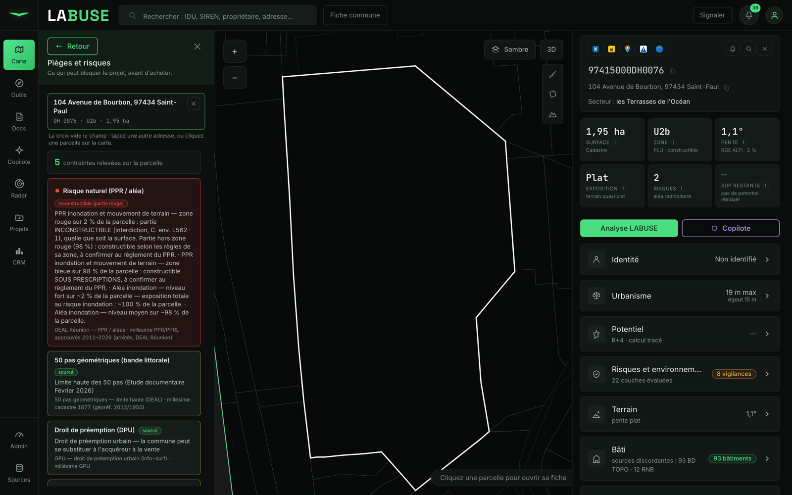
| Libellé à l'écran | D'où il vient | Sourcé / estimé |
|---|---|---|
| « N contrainte(s) relevée(s) » | nb de catégories après regroupement interface | sourcé (dérivé du nb de couches intersectées) |
| Nom de catégorie (ex. « 50 pas géométriques ») | — | sourcé (libellé fixe mappé au type de couche) |
| Effet / phrase (ex. « Emplacement réservé — … ») | à partir de subtype/name/attrs de la couche | sourcé (texte composé à partir des attributs de la donnée) |
| « zone rouge sur X% de la parcelle » / « X% » | calcul SQL d'intersection | sourcé (mesure géométrique) |
| « niveau fort / moyen / faible » | de | sourcé |
| Badge « Inconstructible (partie rouge) » | redhibitoire couleur rouge PPR | estimé (règle interne: rouge ⇒ interdiction) |
| Badge « sourcé » | fixe sur toute carte non rédhibitoire | — (libellé UI, pas une donnée) |
| Source (ex. « DEAL Réunion — PPR / aléas ») | — | sourcé |
| Millésime / « millésime … » / « ingéré le … » | (ou) | sourcé |
| Carte « Procédure PLU en cours » (libellé, stade, date) | (radar Sudocuh) | sourcé |
| Puces « Vérifié, rien à signaler » | (déduites par absence) | estimé (c'est une déduction « rien trouvé », pas une donnée positive) |
| Ligne « Non couvert » + « i » | texte fixe | estimé (constat de lacune codé en dur) |
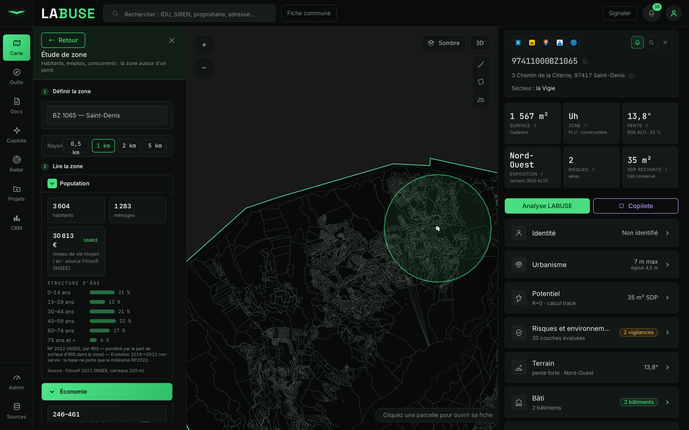
| Libellé à l'écran | D'où il vient | Sourcé ou estimé |
|---|---|---|
| « habitants » / « ménages » | / carreaux Filosofi 2021 | sourcé |
| « niveau de vie moyen / an » (badge sourcé/approché) | Filosofi 2021 | sourcé (donnée INSEE winsorisée; approché si majorité imputée) |
| Structure d'âge (%) | IRIS RP2022 pondéré surface | sourcé (agrégé) |
| « postes salariés déclarés dans la zone » (fourchette) | somme bornes tranches SIRENE | estimé (fourchette, pas un décompte) |
| « Toutes les entreprises … (N) » + familles | compte par section NAF | sourcé |
| « ventes / 12 mois » | compte fenêtre ancrée | sourcé |
| « médian €/m² bâti » | secteur fiche (écrase la médiane de zone) | sourcé (mais secteur fiche, ≠ cercle) |
| « annonces actives » | compte | sourcé mais partiel (pige manuelle) |
| « permis / 36 mois » | compte | sourcé |
| « prix par type (36 mois) » | DVF par type, seuil 5 ventes | sourcé (« — » sous 5 ventes) |
| « N établissement(s) » par domaine BPE | compte liste BPE dédoublonnée | sourcé |
| «% de la zone » (PPR, aléas, assainissement, espaces) | part de surface recouverte | sourcé (calculé) |
| «% FttH (n/N) » | Arcep immeubles | sourcé |
| « véh./j » trafic RN | dernier millésime | sourcé |
| Top propriétaires / acquisitions PM (ha, parc.) | fichiers fonciers DGFiP | sourcé |
| « loyer médian … €/m² » | OLL 2024, échelle commune | sourcé (commune, pas la zone) |
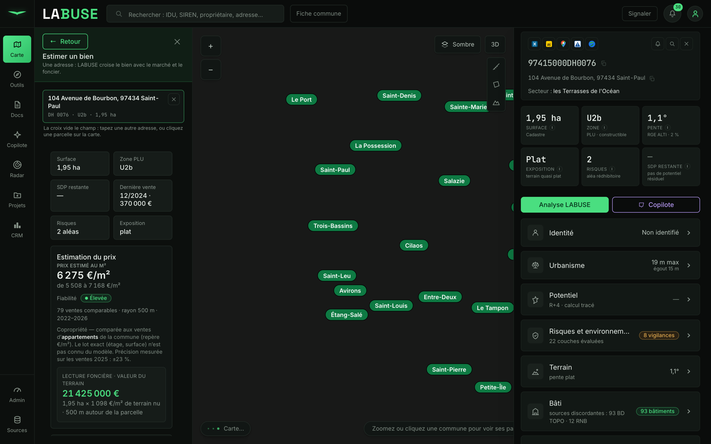
| Libellé à l'écran | D'où il vient | Sourcé / Estimé |
|---|---|---|
| Surface (tuile) | — | sourcé (cadastre) |
| Zone PLU (tuile) | — | sourcé (PLU GPU) |
| SDP restante (tuile) | — | estimé (moteur résiduel) |
| Dernière vente (tuile) | (date + valeur DVF) | sourcé (DVF) |
| Risques (tuile) | familles d'aléas distinctes | sourcé (Géorisques/PPR) |
| Exposition (tuile) | — | sourcé (calcul géométrique) |
| Prix estimé au m² | median de /terrain, repris de pour maison/appart | estimé (médiane de ventes DVF) |
| « de Q1 à Q3 €/m² » | q1/q3 | estimé |
| Fiabilité (badge) | (serveur) ← calibration mesurée | estimé (mesuré sur ventes 2025) |
| N ventes · rayon · période | n, /perimetre, periode | sourcé (comptages DVF) |
| ±N% précision | de | estimé (mesure banc) |
| Ordre de grandeur (valeur €) | surface × €/m², arrondi millier | estimé |
| Lecture foncière (valeur €) | terrain × €/m² terrain nu | estimé |
| 8 ventes comparables | ventes DVF (prix bruts) triées par poids | sourcé (lignes DVF réelles) |
| Libellé à l'écran | D'où il vient | Sourcé / Estimé |
| — | — | — |
| Prix / Type / Surface / Pièces / Terrain | (Radar) | sourcé (annonce relevée) |
| Lecture bâti: écart% | — | estimé (calcul) sur médiane sourcée |
| Référentiel €/m² · N ventes | (DVF commune) | sourcé (DVF) |
| Lecture foncière: valeur /% | terrain × terrain nu commune | estimé |
| Fiabilité « Limitée » | gravé en dur (pas de rattachement parcelle) | — |
| Bloc commune (ventes, médianes, évolution, permis, PLU, aléas) | + | sourcé |
| Libellé à l'écran | D'où il vient | Sourcé ou estimé |
|---|---|---|
| Date du fait (jour / « année » / « entre deux 1ᵉʳ janv. ») | depuis la date de la table source, à sa maille | Sourcé |
| Prix « X € (mutation entière) » | — | Sourcé |
| « N m² bâti » / « N m² terrain » | / DVF , arrondis | Sourcé |
| « N logement(s) » / « N m² hab. » | / | Sourcé |
| « Propriétaire PM avant → après » (dénomination, SIREN) | → | Sourcé |
| « N parcelle(s) liée(s) » + liste IDU | + | Sourcé |
| Puce « Sourcé » sur chaque fait | Codée en dur "statut": "Sourcé" (, etc.) | — (libellé fixe, l'outil ne sert que du sourcé) |
| Bandeau « Faits datés — DVF: … · Sit@del: … » | des dates de chaque table | Sourcé |
| Libellé à l'écran | D'où il vient | Sourcé ou estimé |
| — | — | — |
| Nom du fond gauche/droite (ex. « 2016-2020 », « Actuelle · Ortho Express 2025 ») | basemapLabel → / | Sourcé (libellé du millésime IGN) |
| Image aérienne | tuile WMTS IGN relayée par le proxy | Sourcé (photo IGN) |
| Étiquette IDU sur le contour | pinIdu (la parcelle désignée) | Sourcé |
| « Cadastre d'époque {millésime} » | — | Sourcé |
| Contour blanc de la parcelle | géométrie | Sourcé |
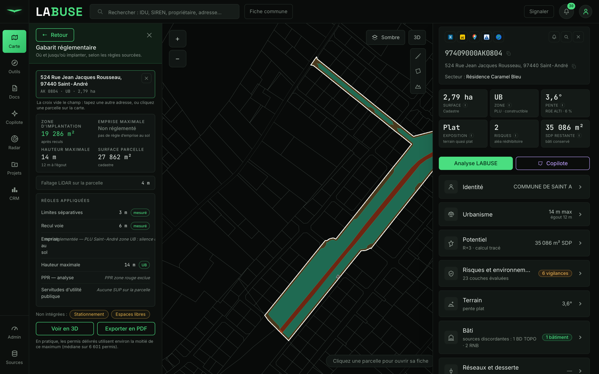
| Libellé à l'écran | D'où il vient | Sourcé ou estimé |
|---|---|---|
| Zone d'implantation (m²) | zoneImplantationM2: parcelle − reculs − exclusions − bâti, ré-échelonnée contenance | Sourcé (géométrie cadastre + reculs PLU config) |
| « après reculs · bâti déduit X m² » | batiDeduitM2 | Sourcé (BD TOPO bâti) |
| Emprise maximale (m²) | plafondEmpriseM2 contenance × CES% | Sourcé (CES config PLU) |
| « X% de la parcelle » | lu de la règle PLU | Sourcé (config PLU) |
| « Non réglementé » | (silence prouvé du règlement) | Sourcé (absence prouvée en config) |
| Hauteur maximale (m) | hauteurReglementaireM faîtage PLU | Sourcé (config PLU) |
| « X m à l'égout » | hauteurEgoutM | Sourcé (config PLU) |
| « Estimé — table graphique par secteur » | égout de repli | Estimé (valeur de repli étiquetée) |
| « Non chiffrée · prospect L ≥ H » | — | Sourcé (règle lue, non chiffrable) |
| Surface parcelle (m²) | surfaceParcelleM2 contenance cadastre | Sourcé (cadastre) |
| « dont X m² en zone … (Y%) » | surfaceNote/pctPortionZone sur parcelle à cheval | Sourcé (découpe PLU) |
| Faîtage LiDAR sur la parcelle (m) | max des du bâti, la valeur LiDAR unique de la parcelle | Sourcé (LiDAR HD 2023) — mais non rattachée à un bâtiment précis |
| Règles appliquées (recul voie/sép., emprise, hauteur) | appliedRules | Sourcé (config PLU + BD TOPO) |
| Badge de zone (ex. « Uh ») / « mesuré » | ou source BD TOPO | Sourcé |
| Non intégrées (Stationnement, Espaces libres, prospect…) | nonIntegratedRules | Sourcé (règle connue, non modélisée) |
| « permis délivrés … moitié de ce maximum (médiane sur 6 601 permis) » | Texte codé en dur, ratio médian 0,46/0,40 Sit@del post-PLU | Estimé (statistique figée, non recalculée à la parcelle) |
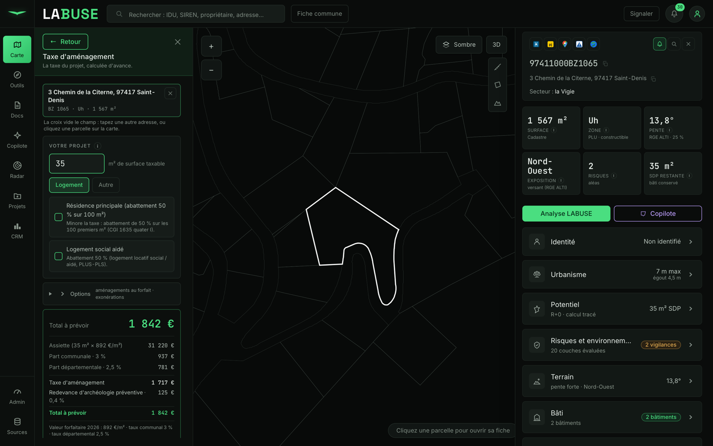
| Libellé à l'écran | D'où il vient | Sourcé ou estimé |
|---|---|---|
| Surface taxable | saisie utilisateur | saisi |
| Valeur forfaitaire 892 €/m² | (barème daté 2026) | sourcé (barème légal) |
| « dont N m² à −50% » | calcul abattement RP/aidé | estimé (calculé) |
| Assiette imposable | — | estimé (calculé) |
| Part communale · taux% | taux / (DELTA) | montant estimé / taux sourcé |
| Part départementale · 2,5% | assiette × 2,5% | montant estimé / taux sourcé (confirmé DELTA) |
| Taxe d'aménagement | — | estimé |
| Redevance d'archéologie · 0,40% | assiette × 0,40% | estimé (taux en dur) |
| Total à prévoir | — | estimé |
| Millésime du taux (« en vigueur depuis le 01/01/2022 ») | de la table | sourcé |
| « ⚠ taux non rafraîchi depuis plus d'un an » | vs 365 j | sourcé (dérivé) |
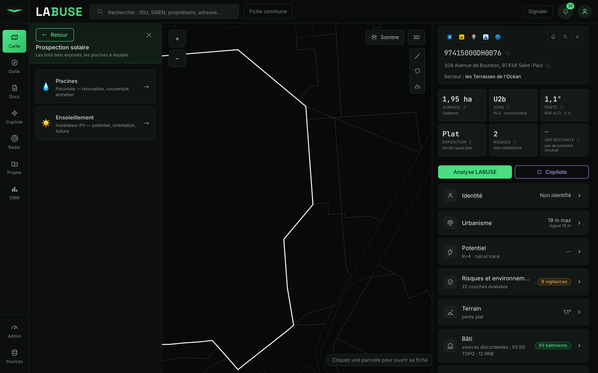
| Libellé à l'écran | D'où il vient | Sourcé ou estimé |
|---|---|---|
| Potentiel (kWh/kWc/an) | interpolé IDW (PVGIS SARAH3) | Sourcé (pastille écran: Estimé, car modélisé PVGIS) |
| Toiture (emprise, m²) | — | Sourcé |
| Puissance installable (kWc) | emprise × 0,2 kWc/m² | Estimé |
| Production annuelle (kWh/an) | kWc × potentiel | Estimé |
| Orientation du bâti (°) | du bâti | Estimé |
| Nature du toit | (LiDAR MNH) si confiance ≥ 0,70 | Estimé (Dérivé) |
| Pente du terrain (°) | (RGE ALTI) | Sourcé |
| Pente du toit médiane (°) | — | Sourcé (pastille écran: Sourcé) |
| Profil mensuel (12 barres) | (point de grille le plus proche) | Sourcé (modélisé PVGIS) |
| « Piscine détectée » | EXISTS dans piscines statut servie, corrections exclues | Sourcé |
| Compteur piscines (chemin Piscines) | sur table piscines | Sourcé |
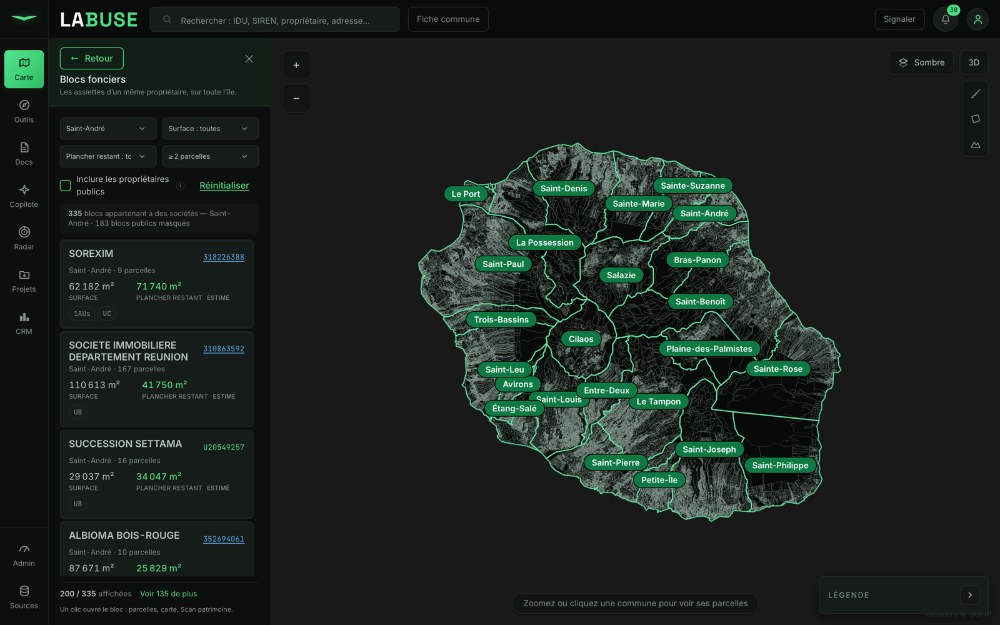
| Libellé à l'écran | D'où il vient | Sourcé / Estimé |
|---|---|---|
| Dénomination (titre carte) | DGFiP du SIREN | Sourcé |
| SIREN | (DGFiP PM) | Sourcé |
| « commune · N parcelles » | communes[0] + | Sourcé |
| Surface (tuile) | somme cadastre arrondie | Sourcé |
| Plancher restant (tuile, badge « Estimé ») | somme des résiduels servis | Estimé |
| « sur K/N » | / | Sourcé (mécanique) |
| Zonages (puces) | zonages dédupliqués du PLU | Sourcé |
| Bandeau « N blocs … · M masqués » | total et | Sourcé (comptages) |
| Détail: IDU · surface · zone · résiduel | — | surface/zone Sourcés, résiduel Estimé |
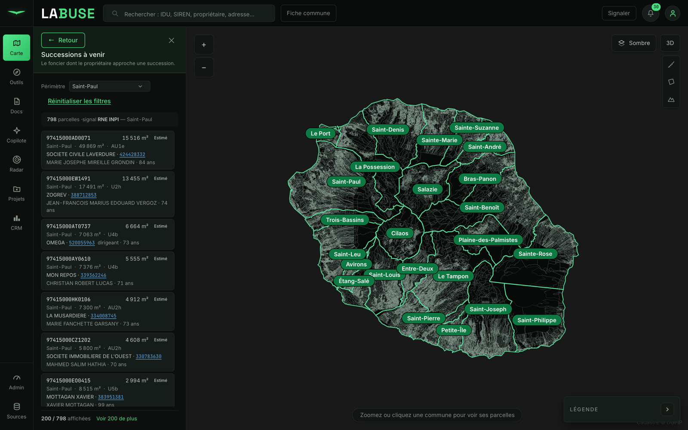
| Libellé à l'écran | D'où il vient | Sourcé ou estimé |
|---|---|---|
| « N parcelles » (bandeau) | total du snapshot filtré | Sourcé (comptage) |
| « signal RNE INPI » | libellé codé en dur au interface; la vraie source serveur est « RNE INPI · Recherche d'entreprises · DGFiP » | — (étiquette) |
| IDU | → | Sourcé (cadastre) |
| surface résiduelle « … m² » + badge Estimé | arrondi | Estimé (moteur fiche) |
| commune | — | Sourcé (cadastre) |
| surface « … m² » | — | Sourcé (cadastre) |
| zone PLU | / | Sourcé (PLU) |
| dénomination · SIREN | / | Sourcé (DGFiP) |
| « Nom · N ans » | (snapshot) + nom de l'aîné | Sourcé (date naissance RNE); le choix « ≥ 70 » est estimé |
| « SCI dormante » | (snapshot) | Estimé (règle 20 ans + 5 ans) |
| « aucun dépôt de comptes depuis N ans » | + flag muet (≥ 3) | Sourcé (BODACC); seuil estimé |
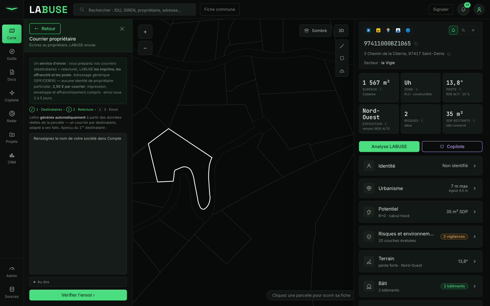
| Libellé à l'écran | D'où il vient | Sourcé / Estimé |
|---|---|---|
| « 2,50 € par courrier » | servi par | Sourcé (config, pas donnée terrain) — prix commercial fixé |
| « envoi sous 3 à 5 jours » | « 3 à 5 » | Sourcé (config) |
| « Plafond du jour: N/100 restants » | / − envois du jour (api l.66) | Sourcé (config + compte base) |
| Destinataire (« À l'occupant » / raison sociale) | (adressage l.58-115) | Sourcé (cadastre PM / règle fixe) |
| Adresse d'envoi | (siège SIRENE) ou (BAN) | Sourcé |
| Référence cadastrale (ex. « BZ 1065 ») | dérivée de l'IDU (adressage l.78) | Sourcé (dérivé) |
| Surface cadastrale (verso) | (compose l.94) | Sourcé |
| Zone d'urbanisme (verso) | (compose l.110) | Sourcé |
| « N mutations publiées sur AAAA-AAAA » (verso) | count 500 m / 3 ans (compose l.130-141) | Sourcé (DVF) |
| « Contraintes connues: … » (verso) | HARD_EXCLUDE risques (compose l.153-159) | Sourcé (run cascade) |
| Référence de demande « C-DDMM-XX » | hachage md5 de l'id | Estimé (identifiant interne, non devinable) |
Mêmes grandeurs calculées de plusieurs façons, mêmes sources lues sous plusieurs formes.
La fiche d'une parcelle, l'outil Estimer et l'Étude de zone ne retiennent un prix médian que s'il repose sur au moins huit ventes ; Comparer, lui, prend le secteur le mieux fourni sans ce garde-fou — il peut donc afficher un prix fondé sur une ou deux ventes que la fiche aurait masqué. Et l'Étude de zone affiche, pour son prix au m², la valeur du secteur de la fiche plutôt que celle du cercle qu'elle analyse.
Selon l'outil, les ventes sont comptées parcelle par parcelle, agrégées par secteur, ou résumées par commune. Deux jeux coexistent — les ventes récentes (depuis 2021) et un jeu ancien (2014-2020) — parfois mobilisés ensemble. Les chiffres de marché ne sont donc pas tous bâtis sur le même périmètre.
Certains outils lisent une valeur pré-calculée, d'autres relancent le moteur de capacité à chaud, un troisième groupe lit encore un autre jeu de données. Rien ne garantit que les trois donnent le même nombre pour une même parcelle (la Taxe et le Gabarit peuvent diverger).
Le Gabarit, la Taxe et Comparer prennent l'emprise, la hauteur et les reculs dans un recueil tenu à la main ; l'outil PLU, lui, sert le texte exact du règlement. Les deux peuvent diverger, et rien ne les rapproche automatiquement.
Selon l'écran, le nombre de parcelles détenues par une même société n'est pas le même (par exemple 1 833 d'un côté, 1 871 de l'autre), sans réconciliation.
Remonter le temps les utilise pour l'historique ; Successions et Scan patrimoine, dont c'est pourtant le sujet (la transmission), ne s'en servent pas — l'âge vient seulement du registre des dirigeants, et seules les sociétés sont couvertes.
La règle de contiguïté (un demi-mètre) est la même pour Assemblage et Blocs fonciers ; le classement rouge/bleu du risque est le même pour Pièges et risques et Gabarit.